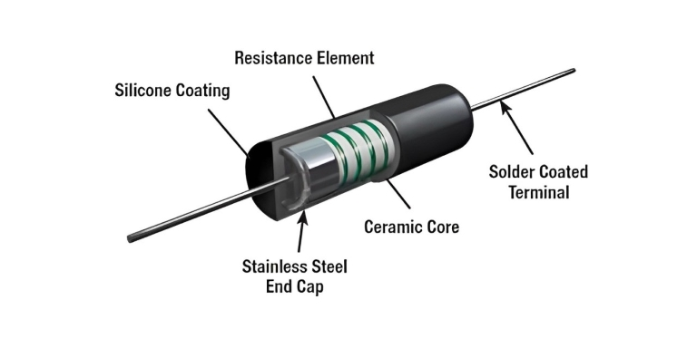
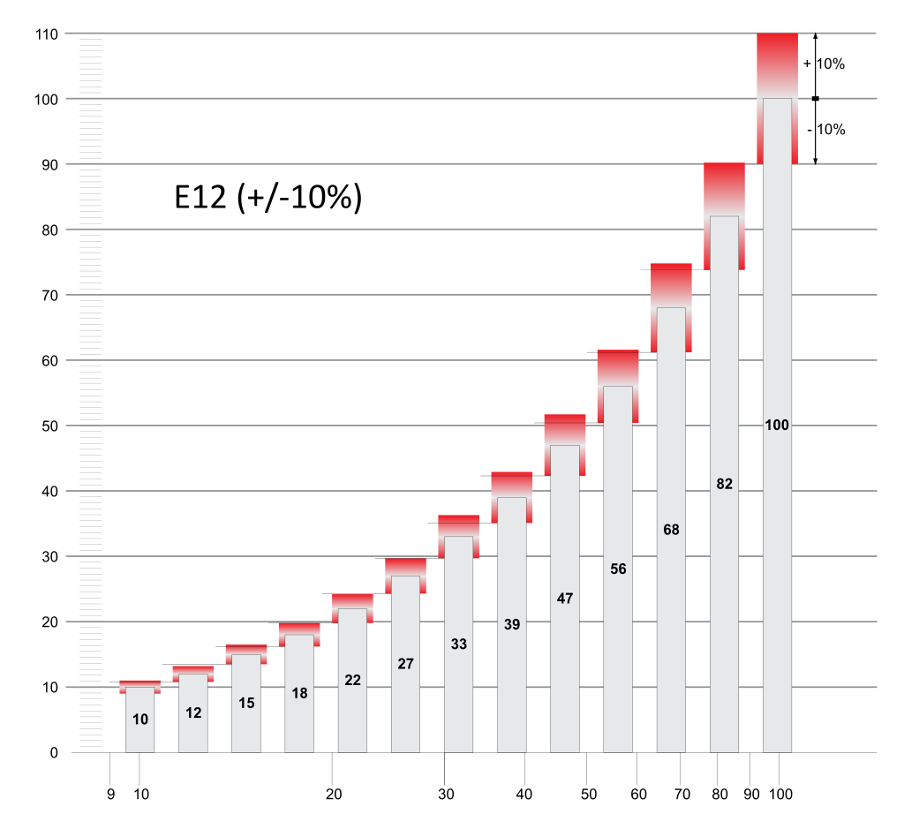
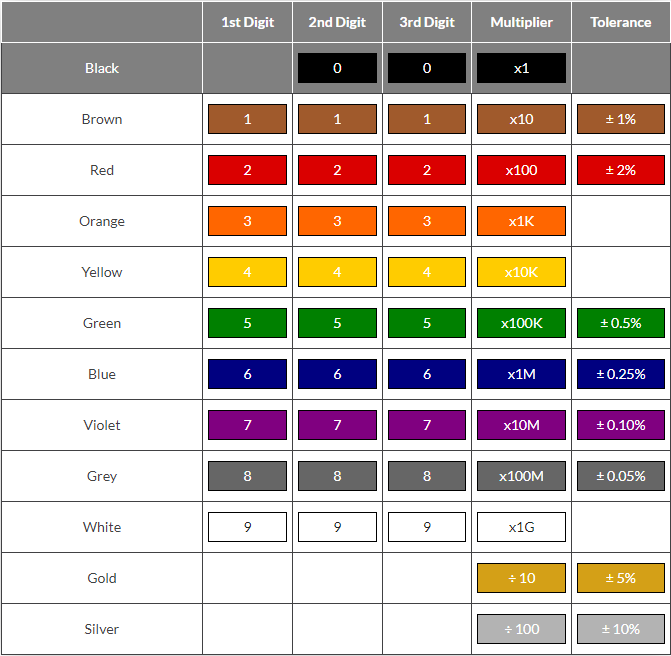
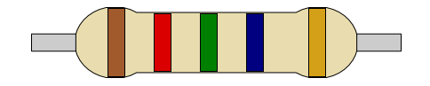
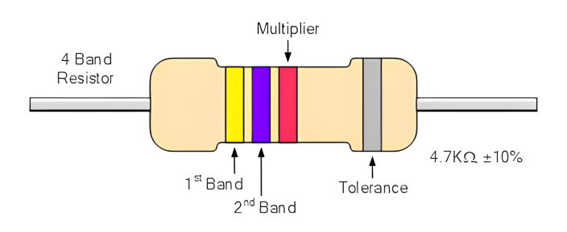
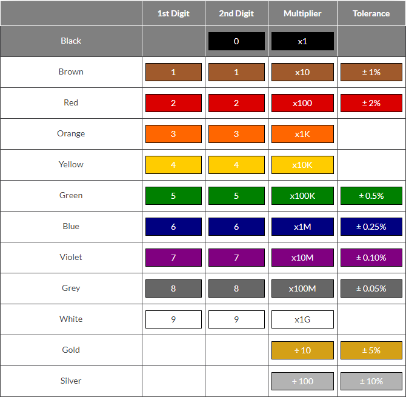
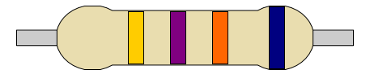
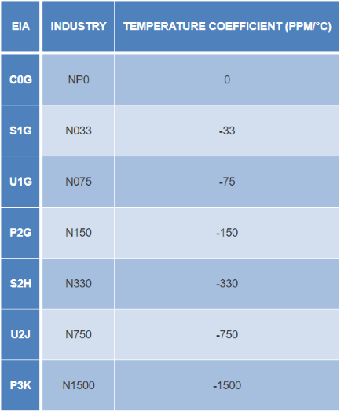

RESISTOR & CAPACITOR DATA#
Author : Kourosh Arfae Shahidi
Email : kourosh.a.shahidi@gmail.com
fall 2024
Introduction#
In electronic circuits, resistors and capacitors are fundamental components that play a crucial role in controlling and managing current and voltage. These two components are widely used in various circuits to regulate performance and ensure that electronic devices operate properly. The accurate and appropriate selection of resistor and capacitor values, based on established standards, is key to optimizing circuit performance and achieving design objectives. One of the most commonly used standards is the E-series, which provides standard resistor values such as E12, E24, and E96, tailored to meet practical design needs. Similarly, capacitors come in a wide range of values, selected based on factors like the type of circuit, required precision, and stability.
This research explores the standard resistor values, focusing on the E-series, and also investigates the various capacitor values. It will further discuss the differences in the structure and materials used in manufacturing these components, providing a deeper understanding of how they function and their applications in electronic circuit design. For any circuit designer, a solid grasp of these components and their values is essential, as the efficient use of resistors and capacitors can significantly enhance the accuracy, stability, and overall performance of electronic systems.
Resistors#
What is Resistor#
The resistor is a passive electrical component that creates resistance in the flow of electric current. In almost all electrical networks and electronic circuits they can be found. The resistance is measured in ohms (Ω). An ohm is the resistance that occurs when a current of one ampere (A) passes through a resistor with a one volt (V) drop across its terminals.
\(R = \frac{V}{I}\)
Types of Resistors by resistance value#
Fixed Resistor#
Fixed resistors are electronic components designed to provide a constant resistance value in a circuit. Their resistance cannot be changed or adjusted, meaning they offer a fixed amount of opposition to the flow of electrical current. These resistors are fundamental to controlling current and voltage in nearly all electronic devices and systems.
Fixed resistors are available in a wide range of resistance values, from fractions of an ohm to several mega ohms, and are used based on the specific needs of the circuit. They come in various types, each with unique characteristics, such as carbon composition, metal film, and wire wound resistors.
The key benefits of fixed resistors are their reliability, simplicity, and ease of use. Once placed in a circuit, they maintain their set resistance value without requiring further adjustments. This makes them essential for applications where consistent performance is critical, such as in signal processing, power distribution, and various control circuits.
Carbon-Composition Resistors#
Carbon composition resistors (CCR) consist of a solid cylindrical resistive element with embedded wire leads or metal end caps to which the lead wires are attached. The body of the resistor is protected with paint or plastic. Early 20th-century carbon composition resistors had uninsulated bodies; the lead wires were wrapped around the ends of the resistance element rod and soldered. The completed resistor was painted for color-coding of its value.
The resistive element in carbon composition resistors is made from a mixture of finely powdered carbon and an insulating material, usually ceramic. A resin holds the mixture together. The resistance is determined by the ratio of the fill material (the powdered ceramic) to the carbon.
The big advantage of carbon composition resistors is their ability to withstand high energy pulses. When current flows through the resistor, the entire carbon composition body conducts the energy.
Wire Wound Resistors#
Wire wound resistors are commonly made by winding a metal wire, usually nichrome, around a ceramic, plastic, or fiberglass core. The ends of the wire are soldered or welded to two caps or rings, attached to the ends of the core. The assembly is protected with a layer of paint, molded plastic, or an enamel coating baked at high temperature.

In this case, the resistor value is determined by first of all the type of wire and then the diameter. How thick is the wire, the thicker the wire the less the resistance and the length of the wire, the longer the wire the great the resistance. They’re used for high power and precise values.
Variable Resistors#
Variable resistors are electronic components that allow for the adjustment of resistance values within a circuit. Unlike fixed resistors, which provide a constant resistance, variable resistors can be manually or electronically altered, enabling users to control current flow and voltage levels precisely. Common types of variable resistors include potentiometers, which are often used in volume controls and light dimmers, and rheostats, which are typically used for adjusting current in high-power applications. Their versatility makes them essential in various applications, from consumer electronics to industrial equipment, as they enable fine-tuning and calibration of circuit performance to meet specific requirements.
Tolerance#
Resistor tolerance is a measure of the resistor’s variation from the specified value. Resistor tolerance is expressed as a percentage of its nominal value. Typical resistor tolerances are one percent and five percent, with tighter-tolerance resistors being somewhat more expensive. If the resistors have tolerances of less than two percent, typically they are referred to as precision resistors.
Standard Resistor Values#
Fixed resistors come in a variety of types, sizes and resistance values. But to have a resistor available for every possible resistance value calculated, literally millions of individual resistors would need to exist. Clearly this is not practical but instead, resistors are manufactured in what are commonly known as Standard Resistor Values, also known as Preferred values.
The standardisation of resistor values has several major advantages. Instead of sequential values of resistance from say 1Ω and upwards, certain values of resistors exist within certain tolerance bands which are evenly distributed as best as possible on a logarithmic scale. Also, the use of standard resistor values allows compatibility among resistors from various manufacturers for a given design, which in itself is advantageous for electrical engineers.
The tolerance band of a fixed resistor is the maximum difference allowed between its actual resistive value and the required or expected resistive value. This difference is commonly expressed as a plus or minus percentage value. For example, a 1kΩ ±20% tolerance resistor may have a maximum and minimum resistive value of:
E12 Series#
The first thing to know is that in each decade of resistance (i.e., from 10 - 100W, 100 - 1kW, 1k - 10kW, etc) there are only a finite number of different nominal values allowed. Most common resistors have values in the E12 series, which only has 12 allowed values per decade. Normalised these are 1.0, 1.2, 1.5, 1.8, 2.2, 2.7, 3.3, 3.9, 4.7, 5.6, 6.8 and 8.2. Multiples of these values are simply repeated in each decade , 10, 12, 15, 18 and so on. Note that the steps between these values are always very close to 20%, because the E12 series dates from the days of resistors with ±10% tolerance.

E24 Series#
E24 resistor values are part of the E-series standard for preferred resistor values, commonly used in electronic components. The E24 series includes 24 different logarithmically spaced resistance values per decade (e.g., between 10Ω and 100Ω), which allows for a broader range of available resistance options with a standard tolerance of ±5%. These values are chosen to ensure that for any given range, there’s sufficient coverage to meet design needs while maintaining reasonable manufacturing precision. E24 resistors are widely used in general-purpose electronics where high precision is not crucial but flexibility in choosing values is important.
Resistor Color Code#
Generally, the resistance value, tolerance, and wattage rating are printed on the body of a resistor as numbers or letters when the resistors body is big enough to read the print, such as large power resistors. but many resistors are so small that it would be difficult to print their value and % tolerance on their body in digits. To overcome this, a coding system based on bands of distinctive colours was developed to assist in identification. Learning this colour code is not as necessary as it used to be (thanks to accurate, low cost digital multimeters!), but it’s not hard to learn and its quite useful knowledge anyway.
The next thing to know is that there are two different resistor colour coding systems in use: one using a total of 4 colour bands, and the other 5.
5-band Resistor Color Code#
5-band resistors are more precise and higher quality metal-film axial resistors with tolerance values of 2% or less compared to wire wound or carbon composition resistors.
the 5-band system is quite capable of handling any resistors with E12 or E24 values
How To Read a 5-band Resistor Colour Code#
Each coloured band of a fixed value resistor represents the nominal Ohmic value from the 1st to the 3rd coloured band. The decimal multiplier digit is located on the 4th band, and the 5th band indicates the tolerance of 5-band resistor.
Resistor colour code markings are always read one band at a time starting from the left to the right, with the larger width tolerance band oriented to the right side indicating its tolerance value. Sometimes there is a slight gap between the multiplier and tolerance bands to help you distinguish between the resistors left and right sides.

Example#
Determine the resistance value of the following resistor

Resistance : 125.00 Mega ohms
Tolerance : ± 5%
4-band Resistor Colour Code#
4-band resistors will almost always have values in the E12 series, while 5-band resistors can have any value in the E24 series.This is worth remembering, because depending on the resistor’s body colour, some of the band colours may not be easy to distinguish. Blue (6) and grey (8) sometimes look very similar, as do red (2), brown (1) and orange (3).

How To Read a 4-band Resistor Colour Code#
The easiest way to identify a resistor colour code is to know which colours represent the most significant digits. Resistor colour code markings are always read one band at a time starting from the left to the right, with the larger width tolerance band oriented to the right side indicating its tolerance.
By matching the colour of the first band with its associated number in the digit column of the colour chart below the first digit is identified and this represents the first digit of the resistance value.

Example#
Determine the resistance value of the following resistor

Resistance : 47.00k ohms
Tolerance : ± 0.25%
Capacitors#
What is Capacitor#
Capacitors are passive electronic components consisting of two or more pieces of conducting material separated by an insulating material. The capacitor is a component which has the ability or “capacity” to store energy in the form of an electrical charge producing a potential difference (Static Voltage) across its plates, much like a small rechargeable battery.
By applying a voltage to a capacitor and measuring the charge on the plates, the ratio of the charge Q to the voltage V will give the capacitance value of the capacitor and is therefore given as: \(C = \frac{Q}{V}\) this equation can also be re-arranged to give the familiar formula for the quantity of charge on the plates as: \(Q = C \times V\)
The Capacitance of a Capacitor#
Capacitance is the electrical property of a capacitor and is the measure of a capacitors ability to store an electrical charge onto its two plates with the unit of capacitance being the Farad (abbreviated to F) named after the British physicist Michael Faraday.
Capacitance is defined as being that a capacitor has the capacitance of One Farad when a charge of One Coulomb is stored on the plates by a voltage of One volt. Note that capacitance, C is always positive in value and has no negative units. However, the Farad is a very large unit of measurement to use on its own so sub-multiples of the Farad are generally used such as micro-farads, nano-farads and pico-farads, for example.
Types of Capacitors#
The types of capacitor available range from very small delicate trimming capacitors using in oscillator or radio circuits, up to large power metal-can type capacitors used in high voltage power correction and smoothing circuits.
The comparisons between the the different types of capacitor is generally made with regards to the dielectric used between the plates. Like resistors, there are also variable types of capacitors which allow us to vary their capacitance value for use in radio or “frequency tuning” type circuits.
Film Capacitors#
Film Capacitors are the most commonly available of all types of capacitor, consisting of a relatively large family of capacitors with the difference being in their dielectric properties. These include polyester (Mylar), polystyrene, polypropylene, polycarbonate, metalised paper, Teflon etc. Film types of capacitor are available in capacitance ranges from as small as 5pF to as large as 100uF depending upon the actual type of capacitor and its voltage rating. Film capacitors also come in an assortment of shapes and case styles which include:
Wrap & Fill (Oval & Round) : where the capacitor is wrapped in a tight plastic tape and have the ends filled with epoxy to seal them.
Epoxy Case (Rectangular & Round) – where the capacitor is encased in a moulded plastic shell which is then filled with epoxy.
Metal Hermetically Sealed (Rectangular & Round) – where the capacitor is encased in a metal tube or can and again sealed with epoxy.
Film Capacitors which use polystyrene, polycarbonate or Teflon as their dielectrics are sometimes called “Plastic capacitors”. The main advantage of plastic film types of capacitor compared to impregnated-paper types is that they operate well under conditions of high temperature, have smaller tolerances, a very long service life and high reliability.

Ceramic Capacitor#
Ceramic Capacitors or Disc Capacitors as they are generally called, are made by coating two sides of a small porcelain or ceramic disc with silver and are then stacked together to make a capacitor. For very low capacitance values a single ceramic disc of about 3-6mm is used. Ceramic capacitors have a high dielectric constant (High-K) and are available so that relatively high capacitance’s can be obtained in a small physical size.
They exhibit large non-linear changes in capacitance against temperature and as a result are used as de-coupling or by-pass capacitors as they are also non-polarized devices. Ceramic capacitors have values ranging from a few pico farads to one or two micro farads, ( μF ) but their voltage ratings are generally quite low.
Electrolytic Capacitors#
Electrolytic Capacitors are generally used when very large capacitance values are required. Here instead of using a very thin metallic film layer for one of the electrodes, a semi-liquid electrolyte solution in the form of a jelly or paste is used which serves as the second electrode (usually the cathode).
Electrolytic’s generally come in two basic forms; Aluminium Electrolytic Capacitors and Tantalum Electrolytic Capacitors.
Capacitor Markings and Their Importance#
Capacitor markings are used for identifying their values and proper usage in electronic circuits. Here’s a detailed breakdown of the key aspects to consider:
On smaller capacitors, you often find only the capacitance value. For larger capacitors, two main parameters are displayed: capacitance and breakdown voltage. Capacitance is usually indicated in microfarads (μF). For instance, “150μF” clearly denotes 150 microfarads. Alternatively, a three-digit code might be used, like “224,” which translates to 220,000 picofarads (pF). This is calculated from 22 x 10^4. In these codes: The last digit shows the power of ten (e.g., 1-6). Numbers 8 and 9 convert to multipliers of 0.01 and 0.1 respectively. This parameter indicates the maximum voltage the capacitor can handle before failing. It is usually marked directly with a value, such as “25V.”
Also, sometimes capacitors are marked with the capital letter K to signify a value of one thousand pico-Farads, so for example, a capacitor with the markings of 100K would be 100 x 1000pF or 100nF.
Polarized capacitors have a clear marker to denote the negative side, often a color stripe (white or black). This ensures correct installation by highlighting the polarity. These markings help in selecting and applying capacitors correctly in circuits. It can also prevent common mistakes in electronic designs and installations. Proper capacitor placement and selection enhance the reliability of electronic devices and protect components from potential damage.
Capacitor Marking Codes#
Capacitors use various marking systems based on their type, size, and manufacturing specifications. The Electronic Industry Alliance (EIA) has standardized these markings to ensure uniform identification across different manufacturers and types. EIA standardization simplifies maintenance, repairs, and integration of capacitors into electronic designs. This consistency enhances efficiency and reliability.
Non-Coded Markings on Capacitors#
For larger capacitors, specifications like capacitance and voltage ratings are printed directly on the casing. These markings are non-coded, clear, and unabbreviated, making the parameters immediately visible and understandable. This straightforward marking method allows users to quickly and accurately assess capacitor specifications during installation, maintenance, or troubleshooting tasks. The ease of identification ensures that key details are always in view.
With clear visibility of capacitance and voltage ratings, decision-making becomes swift and precise. This reduces the risk of errors and enhances operational efficiency in electronic setups. Accurate component handling can maintain the reliability and performance of electronic systems.
Abbreviated Capacitor Marking Codes#
In smaller capacitors, where space is limited, manufacturers use abbreviated marking codes. These codes use significant figures and multipliers to accurately identify capacitance values. This system is ideal for miniaturized electronics, such as surface-mount devices, where space optimization is required. These compact codes help ensure that the correct capacitors are selected and installed, preserving the integrity and performance of the electronic device. Despite their concise nature, these markings require a strong familiarity with standard coding conventions to avoid errors in component selection and application.
Capacitor Color Codes#
To reduce the confusion regarding letters, numbers and decimal points, an International colour coding scheme was developed many years ago as a simple way of identifying capacitor values and tolerances. It consists of coloured bands (in spectral order) known commonly as a Capacitor Colour Codes system.
Capacitor Colour Code Table#
Generally the code consists of 2 or 3 numbers and an optional tolerance letter code to identify the tolerance. Where a two number code is used the value of the capacitor only is given in picofarads, for example, 47 = 47 pF and 100 = 100pF etc. A three-letter code consists of the two value digits and a multiplier much like the resistor colour codes in the resistors section.
Capacitor Voltage Colour Code Table#
It is also possible to determine the voltage rating in this way
Capacitor Voltage Reference#
Type J – Dipped Tantalum Capacitors. Type K – Mica Capacitors. Type L – Polyester/Polystyrene Capacitors. Type M – Electrolytic 4 Band Capacitors. Type N – Electrolytic 3 Band Capacitors.
Example#
Specify the value of capacitance, voltage rating and tolerance in the capacitor below
Capacitance : 10 nF
Tolerance : 20%
Voltage Rating : 100V
Capacitor Tolerance Codes#
Capacitors use tolerance codes, much like resistors, standardized by the Electronic Industry Alliance (EIA). These codes indicate how much the actual capacitance may deviate from the marked value. This precision is ideal for designing and maintaining high-accuracy circuits.
for example consider the capacitor below:
The capacitor on the left is of a ceramic disc type capacitor that has the code 473J printed onto its body. Then the 4 = 1st digit, the 7 = 2nd digit, the 3 is the multiplier in pico-Farads, pF and the letter J is the tolerance and this translates to: \(47pF \times 1,000\) (3 zero’s) = 47,000 pF, 47nF or 0.047uF the J indicates a tolerance of +/- 5%
Capacitor Working Voltage Codes#
The voltage rating on a capacitor indicates the maximum voltage it can safely handle. This parameter is ensuring safety and performance, as it prevents over-voltage failures that can damage both the capacitor and the surrounding circuitry.
Temperature Coefficient Codes on Capacitors#
Capacitors often have markings indicating their temperature coefficients, which show how capacitance changes with temperature. These codes are used for applications requiring consistent performance despite temperature fluctuations, such as precision electronic circuits.
Temperature coefficient codes help ensure that electronic devices function reliably under varying environmental conditions. Knowing how to select capacitors based on these codes can maintain stability and functionality in temperature-sensitive applications.

Capacitor Polarity Markings#
Polarity is used when using polarized capacitors, such as electrolytic and tantalum types. These capacitors have clear polarity indicators, like plus (+) and minus (-) signs or a distinctive stripe, to guide proper installation in circuits.
Aligning these polarity markings with the circuit’s polarity can prevent damage caused by reverse insertion. Quick and accurate identification and alignment of these markings during installation ensure the capacitors function correctly.
Markings for Different Types of Capacitors#
Material Codes for Plastic Film Capacitors#
Capacitors which use a plastic film dielectric are identified using the following codes:
MKT Metallised Polyester (PETP)
KS Polystyrene film/foil
MKC Metallised Polycarbonate
KP Polypropylene film/foil
KT Polyester film/foil
MKP Metallised polypropylene
Ceramic Capacitor Colour coding for Temperature Coefficient#
Capacitors which use a plastic dielectric have a very low temperature coefficient (tempco), their capacitance scarcely varies with temperature, and can generally be regarded as ‘stable’. However this isn’t true with many ceramic-dielectric types. Many of the ceramic materials produce a negative tempco, where capacitance decreases with temperature, while a few give a positive tempco where capacitance increases with temperature.
By careful mixing of materials, manufacturers can produce a ceramic which gives a tempco very close to zero, but the resulting dielectric constant is also quite low. That is why such ‘NP0’ capacitors are normally only available in relatively low values , less than about 200pF, typically.
Color Code#
The following colour bands are used on ceramic capacitors to indicate their tempco. Note that ‘P’ indicates a positive tempco and ‘N’ a negative one, with the number indicating parts per million per degree C.
Electrolytic Capacitors#
Electrolytic capacitors take advantage of the ability of some metal oxides to act as an excellent insulator (at low voltages) and also form a dielectric material with a very high dielectric constant ‘K’. Most common electrolytic capacitors use aluminium oxide as the dielectric, but special-purpose and low leakage types generally use tantalum oxide.
The main shortcoming of electrolytic capacitors is that the insulating and dielectric properties of the metallic oxides are polarity sensitive so most electrolytic capacitors must be connected into circuit so that voltage is always applied to them with the correct polarity (which is marked on their body). The only exception is ‘non polarised’ or bipolar (BP) electrolytics, which are effectively two electrolytics in series back-to-back.
Because the oxide dielectric layer in electrolytic capacitors is extremely thin, these capacitors are more prone to breakdown at higher voltages. So all electrolytics are clearly marked in terms of their safe maximum operating voltage.
In most cases electrolytics also have their capacitance value shown directly on the case as well.
Aluminium Electrolytic Capacitors#
The three most common types of aluminium electrolytic in current use are the axial-lead or RT type, the radial-lead or RB type (for vertical mounting on PC boards) and the chassis-mounting or RG type. There’s also a variation on the RB type called the RP, with a third lead for orientation and added support.
Tantalum Electrolytic Capacitors#
The most common type of tantalum electrolytic in current use is the solid or TAG tantalum type, where the tantalum oxide dielectric is formed on the surface of a solid block of sintered tantalum granules. These capacitors provide low leakage and very high capacitance in a very small volume, but are limited to quite low voltages typically less than 33V.
Conclusion#
In this mini-project, we first introduced resistors and their types based on resistance values. Then, we discussed standard resistor values, the E-series, and resistor color codes, which typically consist of four or five colored bands. Next, we moved on to capacitors. After introducing the different types of capacitors, we examined capacitor marking codes, including color codes, tolerance codes, and temperature codes , etc. Additionally, we provided a more detailed explanation of the labeling for each capacitor type.
Ultimately, by understanding these topics, one can easily obtain practical and useful information when dealing with resistors or capacitors.